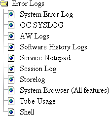

Proprietary to General Electric
Direction 5114043-800, Rev# 9
LightSpeed 3.X Service Methods (Advanced)
Proprietary to General Electric |
The error log viewing menu provides access to information about the host hardware and the various versions of software that control the scanner.
Illustration 1: Error Logs Icon
Illustration 2: Error Logs Menu (Advanced)

Use the ErrorLog menu to access the following tools and diagnostics:
Presents errors generated by failing application processes. It takes about a minute to appear.
This system log viewer displays error messages stored in /var/adm/SYSLOG. These messages consist of the OC IRIX host bootup output, and error messages that indicate bootup problems including SGI hardware failures and warnings.
Calls the system browser, preset to display IOS logs. These logs are involved with such things as the ImageWorks Browser, DICOM filming, DICOM network communications, archiving, and filming.
Shows the historical information for system operations, such as calibration, image analysis, diagnostic tools, collimator tests, and DAS tools. This tool allows the Field Engineer to view when each operation has been performed and the resultant data/status from each operation.
Use this to create a message for GE InSite and other Field Engineers. It will appear on the Health page.
Displays Field Engineer comments, InSite comments, tool and diagnostic start messages, and what images InSite has reviewed. The intent of Session Log is for Service Engineers to communicate their activities such as: “I replaced the kV board” or “I performed quarterly PM.” It also records whenever the system is re-booted or reconfigured.
Session Log has a simple user interface that allows the user to record some text with their name and a date. There is a simple search capability. The file that holds this text is saved and restored with system state.
The purpose of storelog is to recover system disk space by archiving and then removing core, log, and data files that have been saved for their system troubleshooting diagnostic value. Removing these system log files does not add image space. Some cleanup can be performed with applications running, but to access/clean up all files, applications must be shut down. The system will prompt if you desire to archive old files to MOD.
See Log Viewer for complete description of the System Browser.
Shows you the x-ray tube’s model and serial numbers, its meter reading, and install date.
Presents a window that enables you to enter IRIX and UNIX commands, start scrips that perform a series of commands, or start programs. Press <ALT>-<F12> to exit the shell when it is no longer needed.